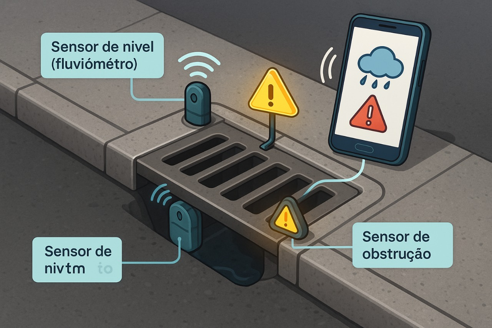
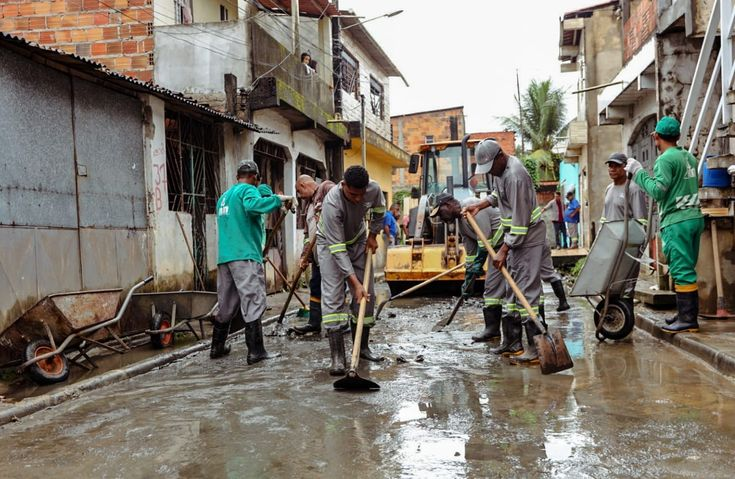

PROBLEMA
Milhares de brasileiros são surpreendidos todos os anos por enchentes devastadoras!
E a pergunta que fica é "Por que essas pessoas ainda são surpreendidas pelas enchentes?"
As enchentes no Brasil mostram a necessidade urgente de soluções tecnológicas. Falta de sensores e monitoramento impede respostas rápidas e eficazes. O projeto Prever+ propõe bueiros inteligentes para prever riscos, informar comunidades vulneráveis e evitar tragédias causadas por alagamentos em áreas urbanas.
Tecnologias
O sistema Prever+ transforma bueiros comuns em inteligentes, monitorando e alertando sobre enchentes em tempo real para prevenir riscos.
Conectividade IoT
Sensores enviam dados em tempo real via IoT, permitindo alertas rápidos às equipes e à população para prevenir enchentes e danos.
Fluviômetro
O sensor mede o nível da água no bueiro em tempo real, analisando riscos e permitindo ações rápidas contra alagamentos.
Sensor de obstrução
Sensores detectam obstruções no bueiro, como lixo ou galhos, e enviam alertas para permitir manutenção antes que ocorram enchentes.
Objetivos
O projeto Prever+ usa sensores IoT em bueiros inteligentes para monitorar e prevenir enchentes, oferecendo dados em tempo real para decisões rápidas.
Dessa forma, será possível antecipar problemas que podem levar a alagamentos, permitindo que as equipes de manutenção atuem preventivamente. Além disso, o projeto visa incentivar a participação da comunidade na prevenção, por meio de um aplicativo que oferece informações e alertas instantâneos.

Público Alvo
No Brasil milhões de pessoas vivem em áreas de risco e os desastres naturais têm se tornado mais frequentes e intensos, tornando-se essencial soluções como a Prever+.
Assim, é possível destacar o foco de venda do produto para Prefeituras e Defesas Civis, já que esses órgãos desempenham um papel essencial na gestão de riscos urbanos e na proteção da população. A tecnologia, nesse contexto, não é apenas uma ferramenta de automação, é um verdadeiro agente de transformação social e urbana.

Benefícios
A implementação dos bueiros inteligentes traz um conjunto robusto de vantagens, que vão desde ganhos ambientais até econômicos e sociais:
- Prevenção eficaz de enchentes: o monitoramento constante permite identificar e corrigir bloqueios.
- Redução de custos públicos e privados: manutenções programadas evitam emergências e altos gastos com danos estruturais.
- Engajamento da comunidade: moradores podem reportar problemas e saber se estão em áreas seguras.
- Resiliência urbana: contribui para cidades mais preparadas para eventos climáticos extremos.
Aplicação
📲 Como a Solução Ajudará no Dia a Dia dos Usuários
A Prever+ alertará, via aplicativo, quando você estiver em uma área de risco, permitindo ações preventivas imediatas e seguras.
- Alertas em tempo real: os moradores recebem notificações sobre riscos iminentes de alagamento.
- Consulta ao status dos bueiros: usuários podem visualizar o nível de água e a obstrução de bueiros próximos.
- Canal de denúncia colaborativo: o app permite que qualquer pessoa registre problemas como entupimentos.
- Mais saúde e bem-estar: a redução de enchentes também diminui os focos de doenças e proporciona um ambiente urbano mais limpo e seguro.